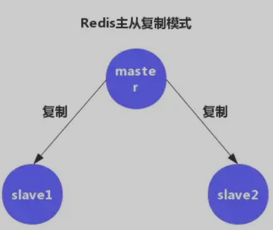
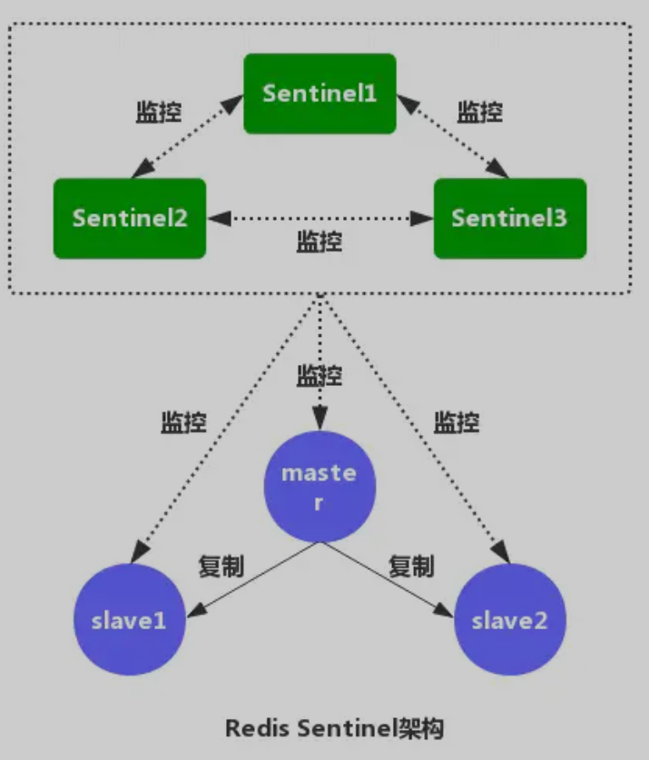
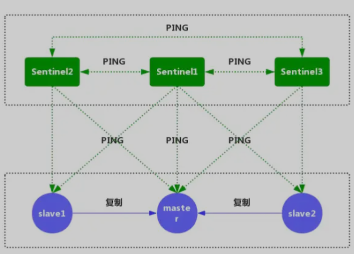
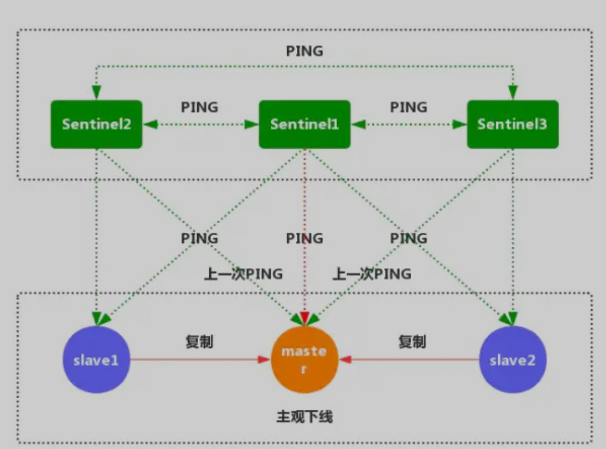
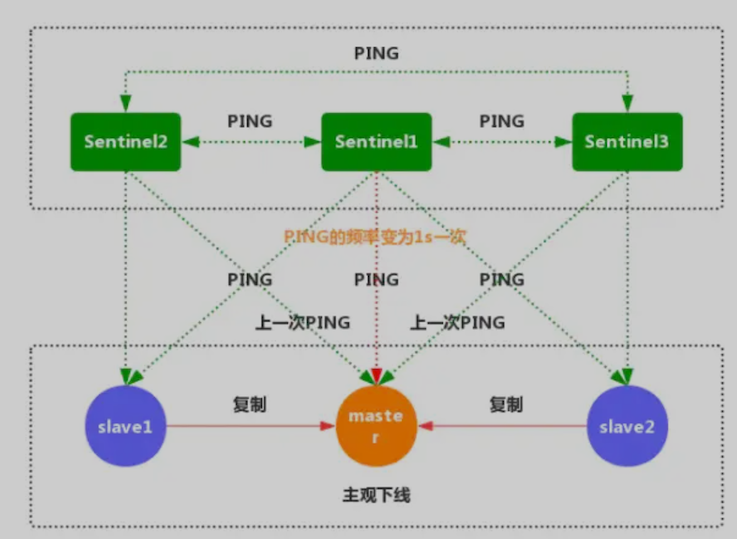
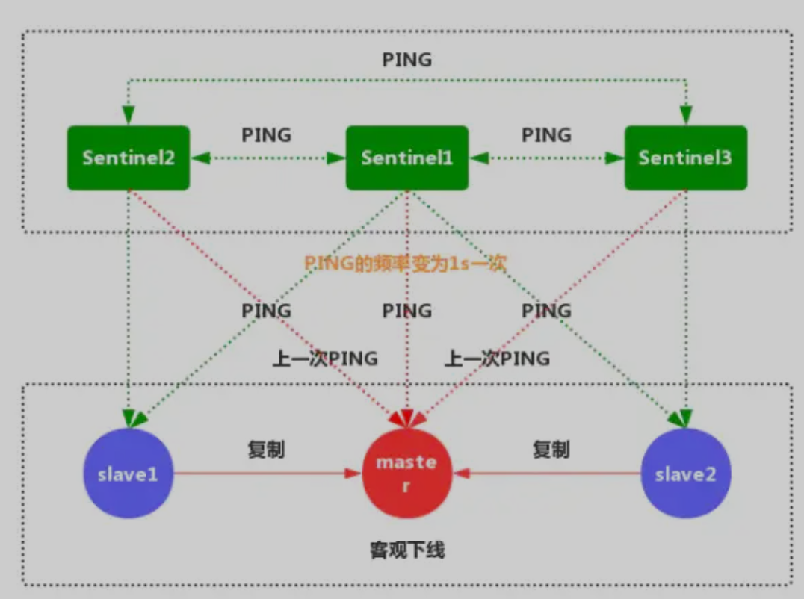
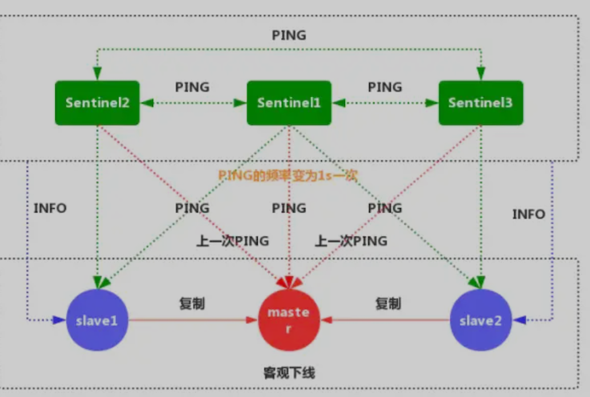
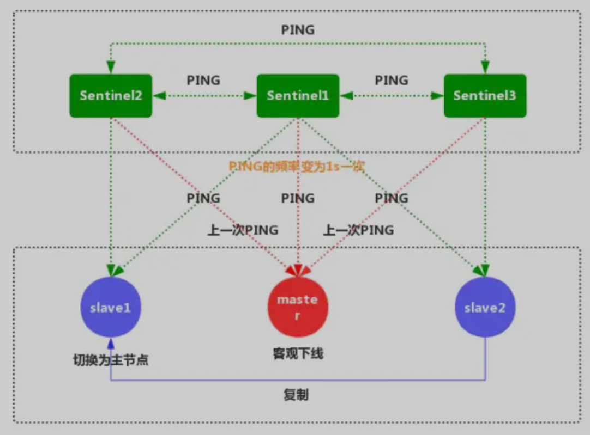

第七节 Redis 高可用性解决方案
1、Redis 主从复制的问题
Redis 主从复制可将主节点数据同步给从节点，从节点此时有两个作用：
- 一旦主节点宕机，从节点作为主节点的备份可以随时顶上来。
- 扩展主节点的读能力，分担主节点读压力。

主从复制同时存在以下几个问题：
- 一旦主节点宕机，从节点晋升成主节点，同时需要修改应用方的主节点地址，还需要命令所有从节点去复制新的主节点，整个过程需要人工干预。
- 主节点的写能力受到单机的限制。
- 主节点的写能力受到单机的限制。
- 原生复制的弊端在早期的版本中也会比较突出，比如：Redis 复制中断后，从节点会发起 psync。此时如果同步不成功，则会进行全量同步，主库 执行 全量备份 的同时，可能会造成毫秒或秒级的卡顿。
2、 Redis 的哨兵（Sentinel）深入探究
Redis Sentinel 的架构：

Redis的哨兵机制就是解决我们以上主从复制存在缺陷（选举问题），保证我们的Redis高可用，实现自动化故障发现与故障转移。
该系统执行以下三个任务：
- 监控：哨兵会不断检查你的主服务器和从服务器是否运作正常。
- 提醒：当被监控的某个Redis服务器出现问题时，哨兵可以通过API给程序员发送通知自动故障
- 转移：主服务器宕机，哨兵会开始一次自动故障转移操作，升级一个从服务器为主服务器，并让其他从服务器改为复制新的主服务器。
3、配置 Sentinel
Redis 源码中包含了一个名为 sentinel.conf 的文件， 这个文件是一个带有详细注释的 Sentinel 配置文件示例。
sentinel monitor mymaster 192.168.10.202 6379 2
Sentine监听的maste地址，
- 第一个参数是给master起的名字，
- 第二个参数为master IP，
- 第三个为master端口，
- 第四个为当该master挂了的时候，
若想将该master判为失效，在Sentine集群中必须至少2个Sentine同意才行，只要该数量不达标，则就不会发生故障迁移。
2）sentinel down-after-milliseconds mymaster 30000
表示master被当前sentinel实例认定为失效的间隔时间，在这段时间内一直没有给Sentine返回有效信息，则认定该master主观下线。
只有在足够数量的 Sentinel 都将一个服务器标记为主观下线之后， 服务器才会被标记为客观下线，``将服务器标记为客观下线所需的 Sentinel 数量由对主服务器的配置决定。
3）sentinel parallel-syncs mymaster 2
当在执行故障转移时，设置几个slave同时进行切换master，该值越大，则可能就有越多的slave在切换master时不可用，可以将该值设置为1，即一个一个来，这样在某个 slave进行切换master同步数据时，其余的slave还能正常工作，以此保证每次只有一个从服务器处于不能处理命令请求的状态。
4）sentinel can-failover mymaster ``yes
在sentinel检测到O_DOWN后，是否对这台redis启动failover机制
5）sentinel auth-pass mymaster 20180408
设置sentinel连接的master和slave的密码，这个需要和redis.conf文件中设置的密码一样
6）sentinel failover-timeout mymaster 180000
failover过期时间，当failover开始后，在此时间内仍然没有触发任何failover操作，当前sentinel将会认为此次failoer失败。
执行故障迁移超时时间，即在指定时间内没有大多数的sentinel 反馈master下线，该故障迁移计划则失效
7）sentinel config-epoch mymaster 0
选项指定了在执行故障转移时， 最多可以有多少个从服务器同时对新的主服务器进行同步。这个数字越小， 完成故障转移所需的时间就越长。
8）sentinel notification-script mymaster ``/var/redis/notify``.sh
当failover时，可以指定一个"通知"脚本用来告知当前集群的情况。
脚本被允许执行的最大时间为60秒，如果超时，脚本将会被终止(KILL)
9）sentinel leader-epoch mymaster 0
同时一时间最多0个slave可同时更新配置,建议数字不要太大,以免影响正常对外提供服务。
主观下线和客观下线
- 主观下线：指的是单个 Sentinel 实例对服务器做出的下线判断。
- 客观下线：指的是多个 Sentinel 实例在对同一个服务器做出 SDOWN主观下线 判断。
4、Redis Sentinel 的工作原理
1.每个 Sentinel 以每秒一次的频率向它所知的主服务器、从服务器以及其他 Sentinel 实例发送一个 PING 命令。

2.如果一个实例距离最后一次有效回复 PING 命令的时间超过指定的值， 那么这个实例会被 Sentinel 标记为主观下线。

3.正在监视这个主服务器的所有 Sentinel 要以每秒一次的频率确认主服务器的确进入了主观下线状态。

4.有足够数量的 Sentinel 在指定的时间范围内同意这一判断， 那么这个主服务器被标记为客观下线。

5.每个 Sentinel 会以每 10 秒一次的频率向它已知的所有主服务器和从服务器发送 INFO 命令。
当一个主服务器被 Sentinel 标记为客观下线时， Sentinel 向下线主服务器的所有从服务器发送 INFO 命令的频率会从 10 秒一次改为每秒一次。

6.Sentinel 和其他 Sentinel 协商 主节点 的状态，如果 主节点 处于 SDOWN 状态，则投票自动选出新的 主节点。将剩余的 从节点 指向 新的主节点 进行 数据复制。

7.当没有足够数量的 Sentinel 同意 主服务器 下线时， 主服务器 的 客观下线状态 就会被移除。当 主服务器 重新向 Sentinel 的 PING 命令返回 有效回复 时，主服务器 的 主观下线状态 就会被移除。
5、自动发现 Sentinel 和从服务器
一个 Sentinel 可以与其他多个 Sentinel 进行连接， 各个 Sentinel 之间可以互相检查对方的可用性， 并进行信息交换。
你无须为运行的每个 Sentinel 分别设置其他 Sentinel 的地址， 因为 Sentinel 可以通过发布与订阅功能来自动发现正在监视相同主服务器的其他 Sentinel。
- 每个 Sentinel 会以每两秒一次的频率， 通过发布与订阅功能， 向被它监视的所有主服务器和从服务器的频道发送一条信息， 信息中包含了 Sentinel 的 IP 地址、端口号和运行 ID （runid）。
- 每个 Sentinel 都订阅了被它监视的所有主服务器和从服务器的频道， 查找之前未出现过的 sentinel 。当一个 Sentinel 发现一个新的 Sentinel 时， 它会将新的 Sentinel 添加到一个列表中。
- Sentinel 发送的信息中还包括完整的主服务器当前配置。如果一个 Sentinel 包含的主服务器配置比另一个 Sentinel 发送的配置要旧， 那么这个 Sentinel 会立即升级到新配置上。
- 在将一个新 Sentinel 添加到监视主服务器的列表上面之前， Sentinel 会先检查列表中是否已经包含了和要添加的 Sentinel 拥有相同运行 ID 或者相同地址（包括 IP 地址和端口号）的 Sentinel ， 如果是的话， Sentinel 会先移除列表中已有的那些拥有相同运行 ID 或者相同地址的 Sentinel ， 然后再添加新 Sentinel。
6、故障转移
一次故障转移操作由以下步骤组成：
- 发现主服务器已经进入客观下线状态。
- 对我们的当前纪元进行自增， 并尝试在这个纪元中当选。
- 如果当选失败， 那么在设定的故障迁移超时时间的两倍之后， 重新尝试当选。如果当选成功， 那么执行以下步骤。
- 选出一个从服务器，并将它升级为主服务器。
- 向被选中的从服务器发送
SLAVEOF NO ONE命令，让它转变为主服务器。 - 通过发布与订阅功能， 将更新后的配置传播给所有其他 Sentinel ， 其他 Sentinel 对它们自己的配置进行更新。
- 向已下线主服务器的从服务器发送 SLAVEOF 命令， 让它们去复制新的主服务器。
- 当所有从服务器都已经开始复制新的主服务器时， 领头 Sentinel 终止这次故障迁移操作。